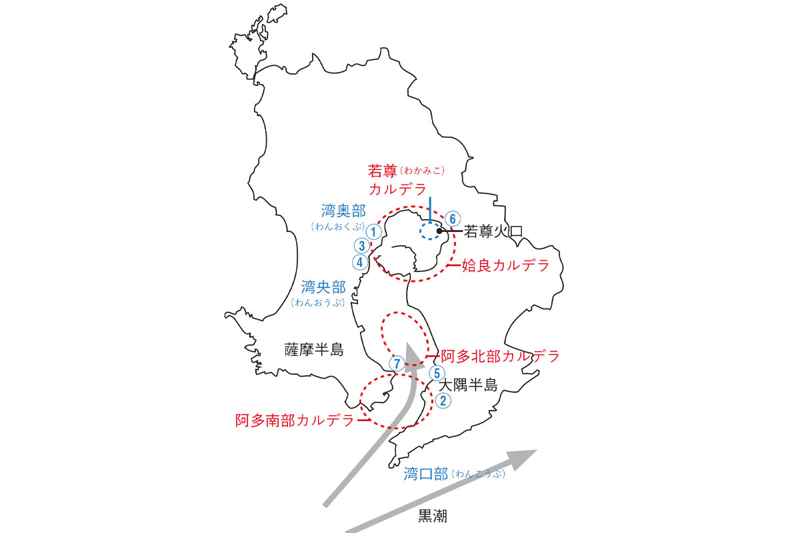
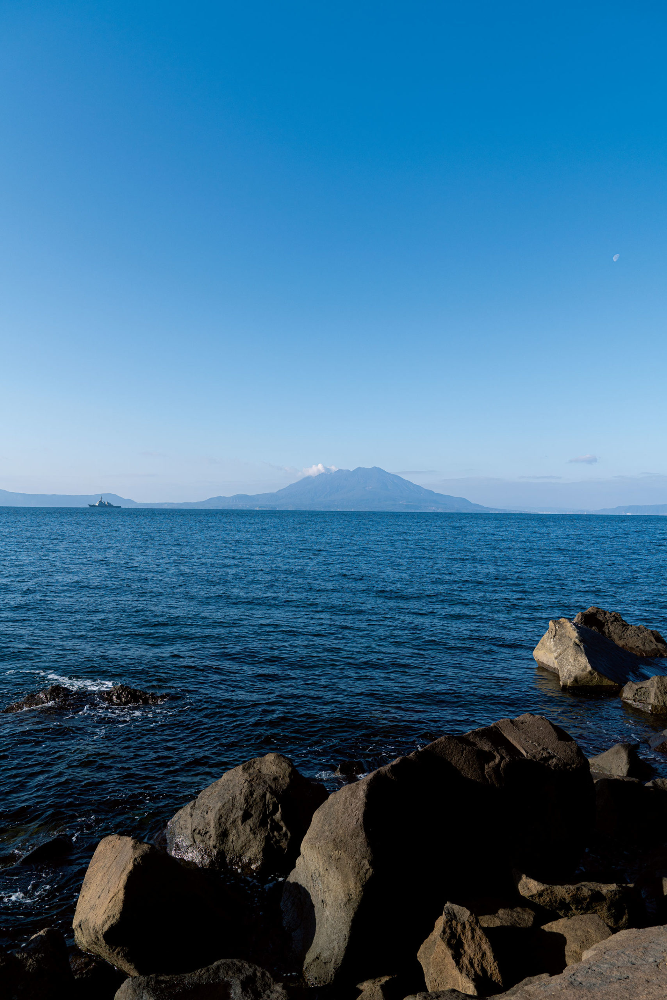
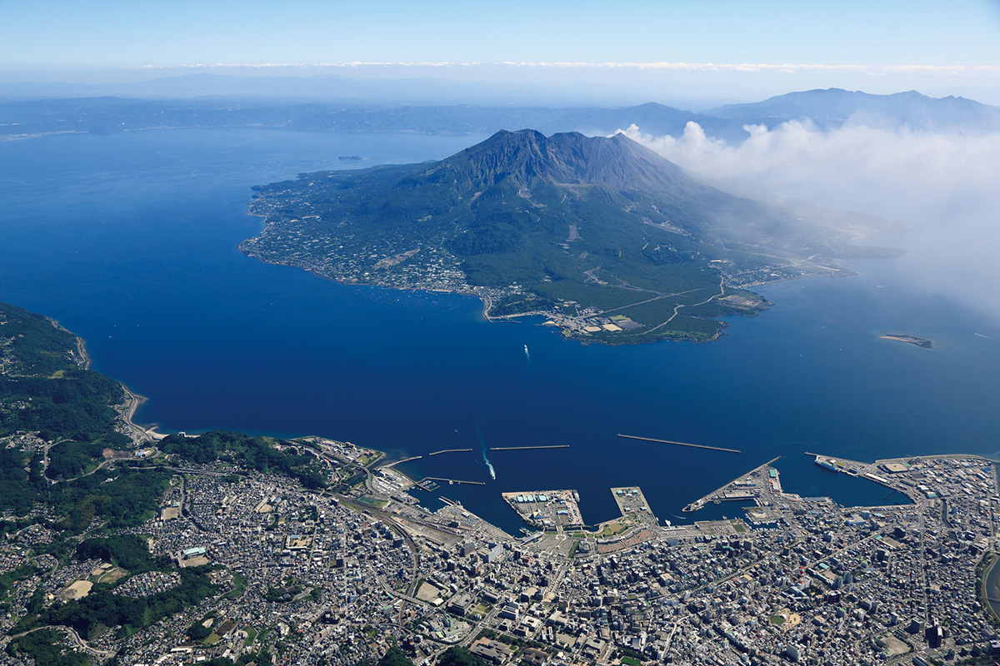
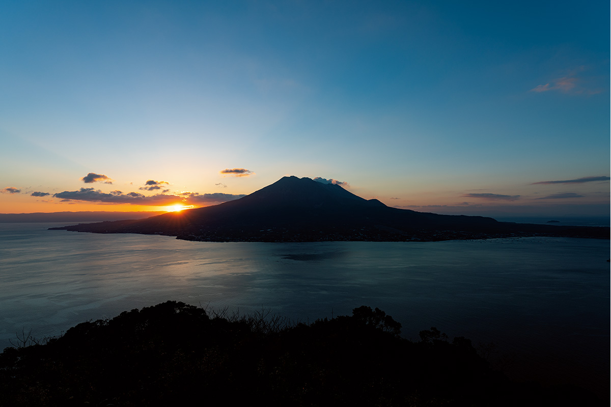
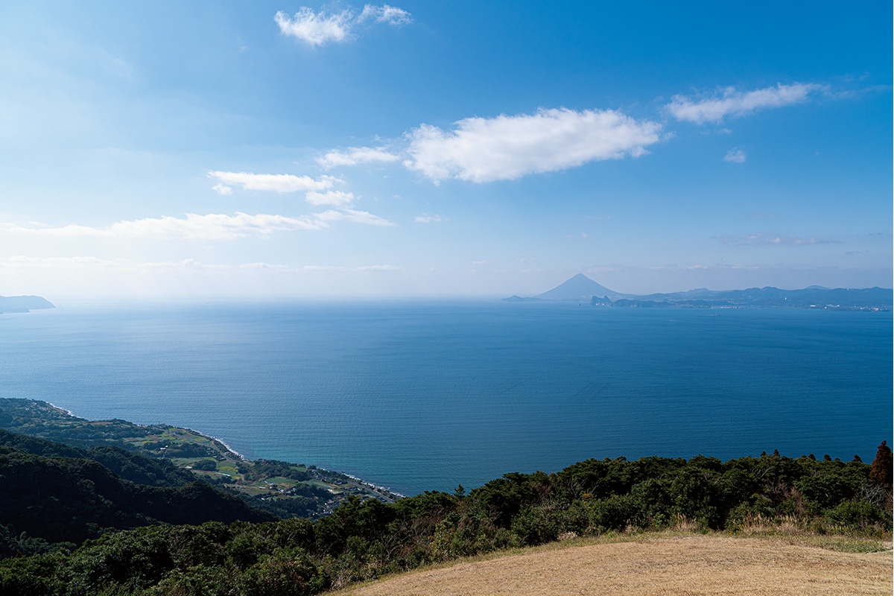
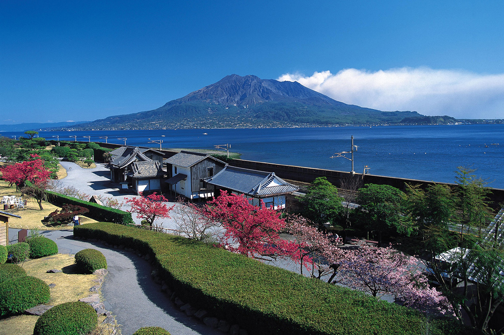
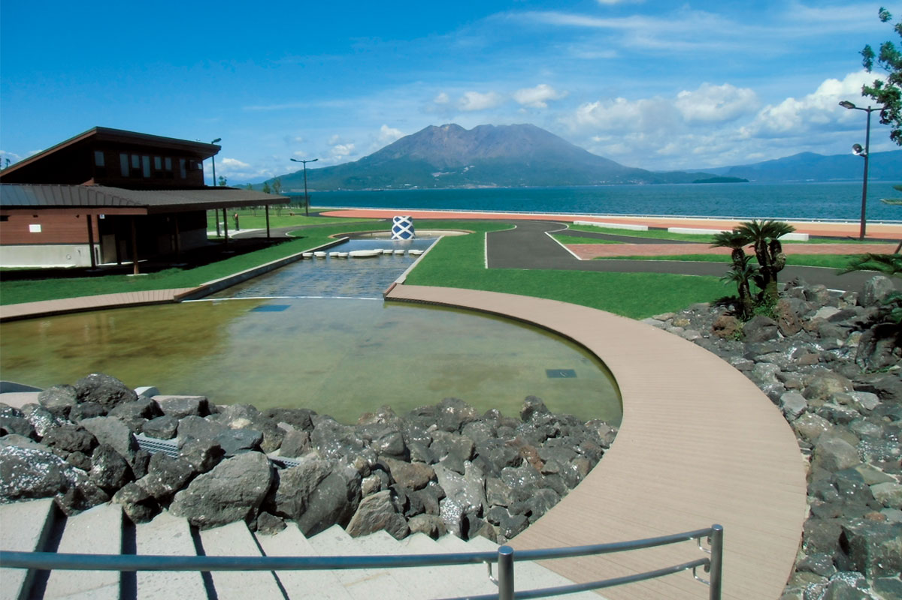
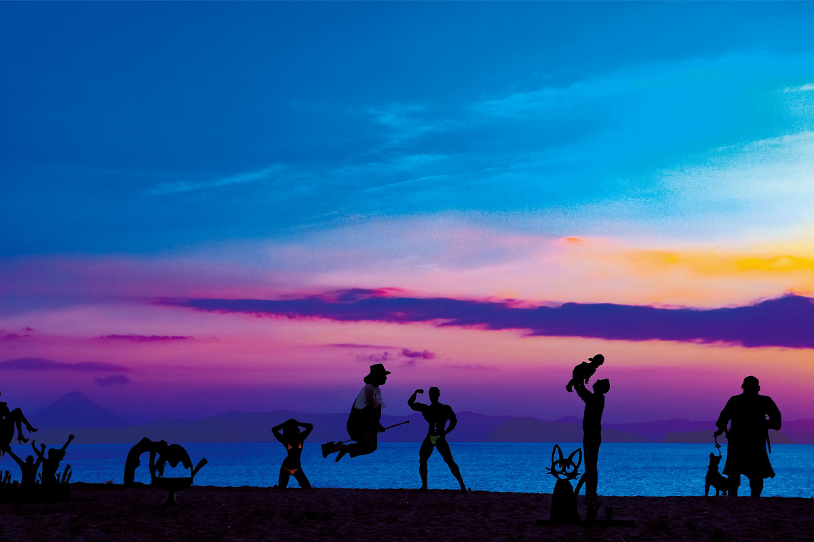
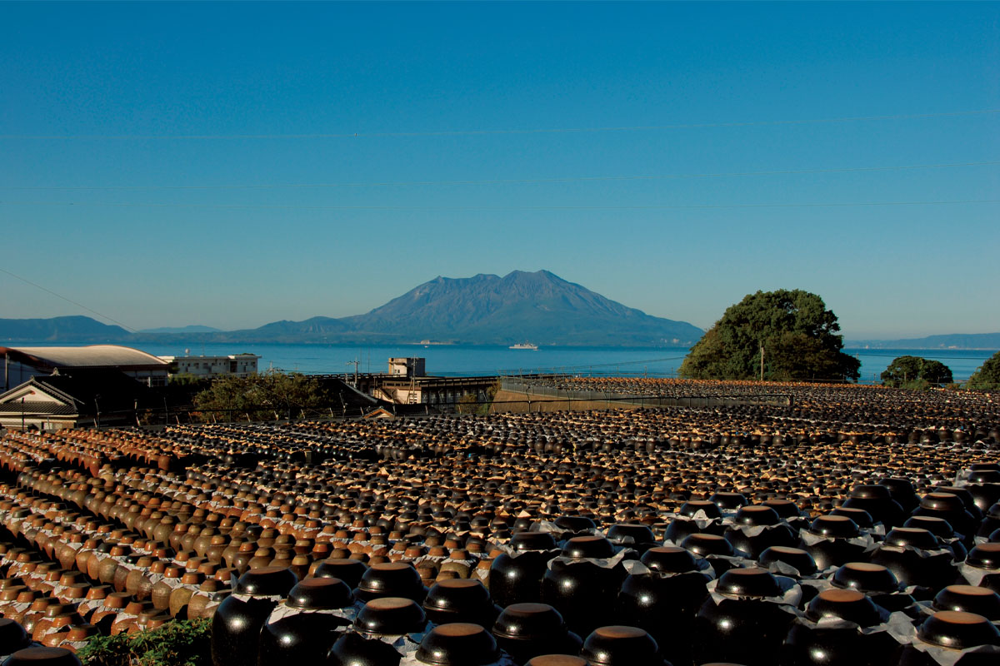
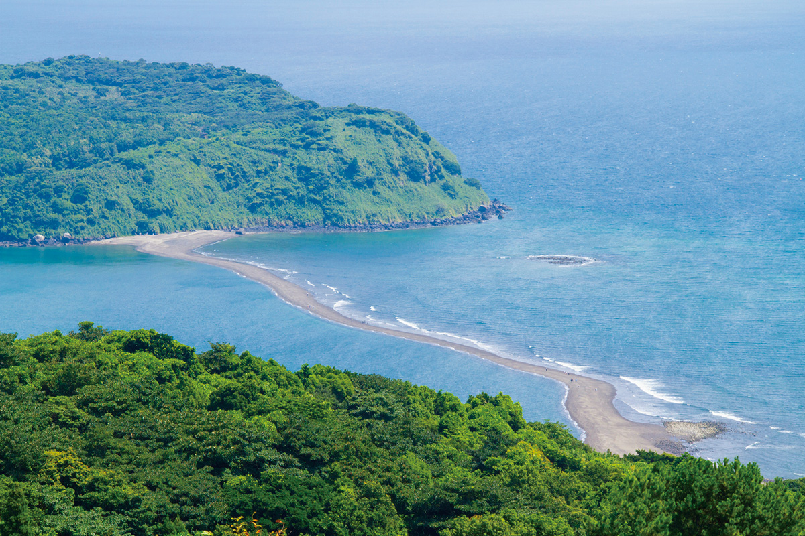

Префектура Кагосима · залив Кинко · виды
Залив Кинко и Сакурадзима: семь видовых точек вокруг вулканической кальдеры

Перед посадкой в аэропорту Кагосимы самолёт закладывает вираж, и под крылом появляется Сакурадзима: действующий вулкан, над которым поднимается дым. Трудно поверить, что спокойное море между двумя полуостровами на самом деле глубокая кальдера.
Геология
Море в огромном котле
Чтобы понять здешние пейзажи, стоит начать с того, как они появились. Около 29 000 лет назад в глубине нынешнего залива Кинко произошло колоссальное извержение. Магма разлилась пирокластическими потоками и засыпала всё вокруг: так возникло плато сирасу, толщина которого местами превышала 100 метров. После извержения осталась огромная впадина, кальдера Аира. Её заполнило море, и получилась северная часть залива.

Примерно 26 000 лет назад на южном краю кальдеры Аира начались новые извержения, и на дне моря родилась маленькая Сакурадзима. Сначала вырос пик Китадакэ, около 13 000 лет назад он показался над водой. Потом жерло сместилось, и появился пик Минамидакэ. Он извергался снова и снова, а во время большого извержения 1914 года лава соединила остров с полуостровом Осуми. Здесь буквально чувствуешь магму под ногами и видишь, как дышит планета.
Слово «кальдера» по-португальски означает «большой котёл», и северная часть залива действительно похожа на котёл с водой: глубина здесь больше 200 метров. В центре залива тоже лежит подводная кальдера от древнего извержения, так что даже тихая с виду вода очень глубока. Рыбаки иногда вытаскивают сетями глубоководных креветок и рыб. Многие из них вкусны: креветка «такаэби» или «сумикуиуо», родственница дорогой рыбы нодогуро.
Виды
Сакурадзима с разных берегов
Пейзаж с Сакурадзимой так хорош во многом благодаря заливу. Местные говорят «Сакурадзима, плывущая по заливу Кинко», и с любой возвышенности картина именно такая. Вулкан состоит из двух сросшихся конусов, поэтому с каждой точки выглядит по-своему. Это хорошо видно, если объехать залив по берегам полуостровов Сацума и Осуми. А если ехать на юг полуострова Осуми, за заливом откроется ещё и правильный конус горы Каймон.

Паром
Пятнадцать минут до вулкана
Чтобы почувствовать залив, стоит сесть на паром. Sakurajima Ferry связывает порт Кагосимы с портом Сакурадзимы примерно за 15 минут. В 2021 году паром ходил круглосуточно, утром и вечером каждые 15 минут. Чем ближе остров, тем отчётливее видны суровые склоны и деревни у подножия, и понимаешь, что на этом вулкане живут около 5000 человек.
Есть ещё два регулярных маршрута между полуостровами Сацума и Осуми, и с каждого залив выглядит иначе. Хороши и вечерние рейсы на закате. А если заказать на борту удон, которым славится паром, настроение станет совсем дорожным.
Точки
Семь мест с лучшими видами
Парк Ёсино

Парк лежит на возвышенности к северо-востоку от центра города Кагосима. Со смотровой площадки Сакурадзима видна сверху, а в ясную погоду вдали различимы горы Кирисима и гора Каймон. Отсюда смотрят, как солнце встаёт из-за вулкана. Весной и летом здесь цветут сакура, азалии, гортензии и подсолнухи, осенью космеи, зимой слива. Есть ещё сад саговников с южным настроением и японский сад.
Парк Ёсино
- Адрес
- префектура Кагосима, город Кагосима, Ёсино-тё, 7955
- Телефон
- +81 99-243-0155
- Часы работы
- март 7:00–18:00, апрель–июнь и сентябрь 6:00–19:00, июль–август 6:00–19:30, октябрь 6:00–18:00, ноябрь–февраль 7:00–17:00
- Выходные
- нет
- Цены / Вход
- бесплатно
Панорамный парк Нисихарадай

Смотровая площадка стоит на высоте 439 метров почти у южной оконечности полуострова Осуми. За красивой линией берега видна Сакурадзима на севере и гора Каймон на западе. Отсюда же стартуют парапланеристы.
Панорамный парк Нисихарадай
- Адрес
- префектура Кагосима, посёлок Минамиосуми, Нэдзимэ
- Телефон
- +81 994-24-3115 (отдел туризма посёлка Минамиосуми)
Сад Сэнганъэн

Загородную усадьбу князей Сацумы из рода Симадзу построили около 350 лет назад. Из главного дома виден сад, в котором Сакурадзима служит искусственной горой, а залив Кинко прудом. Здесь легко представить, как жили владетельные князья.
Сад Сэнганъэн
- Адрес
- префектура Кагосима, город Кагосима, Ёсино-тё, 9700-1
- Телефон
- +81 99-247-1551
- Часы работы
- 9:00–17:00
- Выходные
- первое воскресенье марта
Marine Port Kagoshima

К этому причалу швартуются круизные лайнеры из Японии и других стран. Сакурадзима, если смотреть на неё с уровня воды, производит сильное впечатление. Здесь есть газон, прогулочные дорожки и площадка у воды, так что сюда хорошо приезжать с семьёй и никуда не спешить.
Marine Port Kagoshima
- Адрес
- префектура Кагосима, город Кагосима, Тюо-коси-мати, 1-10
- Телефон
- +81 99-805-7414
- Часы работы
- ноябрь–март 7:00–19:00, апрель–июнь, сентябрь и октябрь 6:00–20:00, июль–август 6:00–21:00
- Выходные
- нет
Пляж Камикава

Пляж стоит у шоссе на полуострове Осуми. Справа видна Сакурадзима, слева гора Каймон. В сумерках арт-объект из силуэтов на песке создаёт почти сказочную картину. Рядом есть кемпинг, а с камней можно ловить рыбу.
Пляж Камикава
- Адрес
- префектура Кагосима, уезд Кимоцуки, посёлок Кинко, Камикава, 3306-11
- Телефон
- +81 994-22-1446
- Цены / Вход
- в июле и августе кемпинг платный
Поле кувшинов с чёрным уксусом

Посёлок Фукуяма в городе Кирисима считается родиной японского чёрного уксуса. Его делают по старинному способу: уксус зреет в глиняных кувшинах прямо под открытым небом. Вокруг, сколько хватает глаз, одни кувшины, и Сакурадзима поверх них выглядит так, как нигде больше.
Информационный центр «Цубобатакэ» (Sakamoto Kurozu)
- Адрес
- префектура Кагосима, город Кирисима, Фукуяма-тё, Фукуяма, 3075
- Телефон
- +81 120-707-380 (бесплатный номер в Японии)
Остров Тирингасима

Необитаемый остров лежит примерно в 800 метрах от мыса Тара, к северо-востоку от центра Ибусуки. С марта по октябрь в сильные и средние отливы из воды выходит песчаная коса, и по ней можно дойти до острова. Рекомендуем подняться и на гору Уомидакэ на берегу: оттуда открывается отличный вид.
Остров Тирингасима
- Адрес
- префектура Кагосима, город Ибусуки, Нисиката
- Телефон
- +81 993-22-2111 (отдел туризма города Ибусуки)
Дорога
Как добраться
Из токийского аэропорта Ханэда в Кагосиму летают Japan Airlines, ANA, Skymark и Solaseed Air, полёт длится около двух часов. Из аэропорта в город удобнее всего ехать на автобусе-лимузине: прямой рейс до станции Кагосима-Тюо идёт 38 минут.
Название «залив Кинко», по одной из версий, пришло из стихотворения Иэхисы Симадзу, 18-го главы рода Симадзу, где волны залива сравниваются с парчой, развешанной на ветвях у прибрежной горы.
Фото: Ацуси Ямахира.